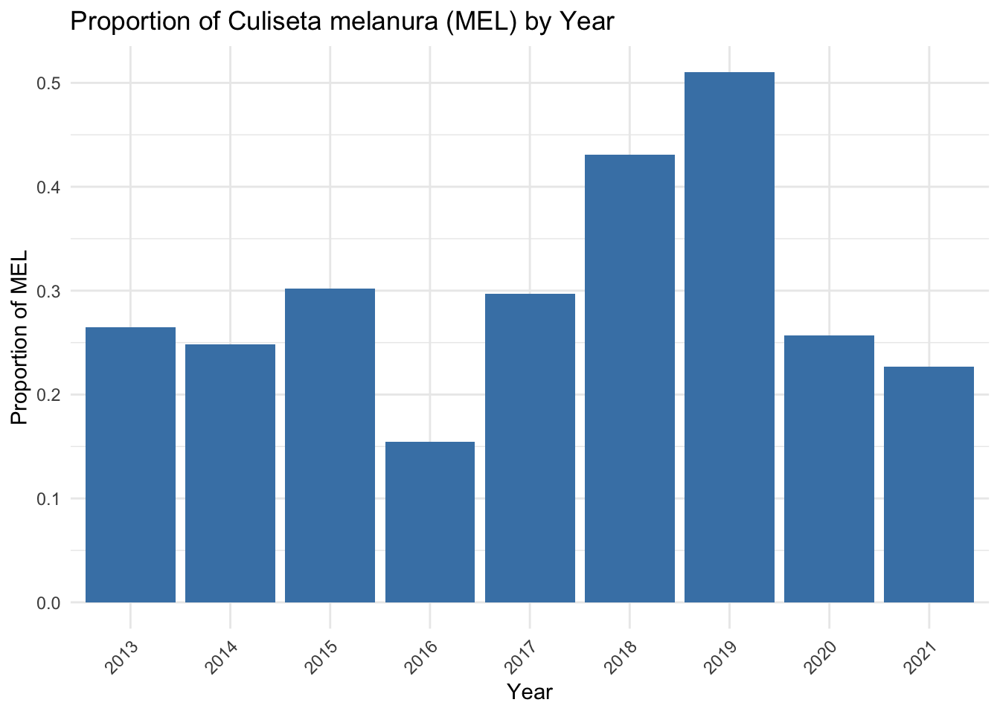

library(readxl) #for loading Excel files
library(httr) #for getting data from the web
library(dplyr) #for data processing/cleaning
library(tidyr) #for data processing/cleaning
library(skimr) #for visualizing data
library(here) #allows relative pathways for data
library(readr)
library(naniar)
library(ggplot2)
library(sf)
library(topicmodels)
library(openxlsx)
library(lubridate)
library(knitr)
library(kableExtra)
library(webshot2)
library(magick)
library(leaflet)MADA Project Part 2
loading, cleaning, exploring the data
Introduction
This file contains the process for loading, cleaning and exploring the datasets.
Loading libraries
Loading data
Mosquito trap data
This dataset contains trap counts by species for all mosquito traps set in the Bristol County from 2007-2023
# Construct the path to the Excel file
file_path_mos <- here("data", "raw-data", "MOSQ_MADA.xlsx")
# import the data to R and store it in a dataframe named "mosquito"
mosquito_raw <- read_excel(file_path_mos)
#load the first few rows of data to verify the data loaded as expected
head(mosquito_raw)# A tibble: 6 × 12
MCD `Pool ID` `Species code` `Trap Set Date` `Collection Date` Town
<chr> <chr> <chr> <dttm> <dttm> <chr>
1 Bristol BR21NS-0… PRO 2021-07-26 00:00:00 2021-07-27 00:00:00 Berk…
2 State … SL21NS-6… TVT 2021-08-29 00:00:00 2021-08-30 00:00:00 Rayn…
3 Bristol BR22NS-0… WAL 2022-07-07 00:00:00 2022-07-08 00:00:00 Mans…
4 Bristol BR07-000… ABS 2007-06-04 00:00:00 2007-06-05 00:00:00 Free…
5 Bristol BR07-000… ABS 2007-06-04 00:00:00 2007-06-05 00:00:00 Free…
6 Bristol BR07-000… ABS 2007-06-06 00:00:00 2007-06-07 00:00:00 Free…
# ℹ 6 more variables: `Number of Traps` <dbl>, `Trap Type` <chr>,
# `Pool Size` <dbl>, `Submitted for Testing` <chr>, Genus <chr>,
# Species <chr>Mosquito trap sites
Location for the mosquito trap sites
# Construct the path to the file
file_path_trap = here("data", "raw-data", "BCMCP_trap_sites_2021.xlsx")
# import the data to R and store it in a dataframe named "trap_location"
trap_location = read_excel(file_path_trap)
#load the first few rows of data to verify the data loaded as expected
head(trap_location)# A tibble: 6 × 8
`Trap Site Address` MCD Location DecLat DecLong Quadrant Inact Edit
<chr> <chr> <chr> <dbl> <dbl> <chr> <lgl> <lgl>
1 Crown Street, BR Bris… Attlebo… 41.9 -71.4 <NA> NA NA
2 Rutledge st., BR Bris… Attlebo… 41.9 -71.4 <NA> NA NA
3 Adamsdale Road & Siesta Dr… Bris… North A… 41.9 -71.4 <NA> NA NA
4 Lee's Playground Bris… Attlebo… 41.9 -71.4 <NA> NA NA
5 Newport Avenue #960, BR Bris… Attlebo… 41.9 -71.4 <NA> NA NA
6 66 Hillside Road, BR Bris… North A… 42.0 -71.3 <NA> NA NA str(trap_location)tibble [152 × 8] (S3: tbl_df/tbl/data.frame)
$ Trap Site Address: chr [1:152] "Crown Street, BR" "Rutledge st., BR" "Adamsdale Road & Siesta Drive, BR" "Lee's Playground" ...
$ MCD : chr [1:152] "Bristol" "Bristol" "Bristol" "Bristol" ...
$ Location : chr [1:152] "Attleboro: Attleboro 02703(Bristol)" "Attleboro: Attleboro 02703(Bristol)" "North Attleborough: North Attleborough unknown(Bristol)" "Attleboro: Attleboro 02703(Bristol)" ...
$ DecLat : num [1:152] 41.9 41.9 41.9 41.9 41.9 ...
$ DecLong : num [1:152] -71.4 -71.4 -71.4 -71.4 -71.4 ...
$ Quadrant : chr [1:152] NA NA NA NA ...
$ Inact : logi [1:152] NA NA NA NA NA NA ...
$ Edit : logi [1:152] NA NA NA NA NA NA ...Mosquito virus data
The virus isolation data is stored in separate spreadsheets by year from 2014 to 2020
This code will load all the files, combine them, and then save the combined file in the “raw data” folder
#Define the path to the folder with Excel files
folder_path <- here("data", "raw-data", "virus_data")
#List all Excel files (.xls and .xlsx)
file_paths <- list.files(path = folder_path, pattern = "\\.xls[x]*$", full.names = TRUE)
#Read each file into a list of data frames
data_list <- lapply(file_paths, read_excel)
#Check the names of the files read
print(basename(file_paths))[1] "2014virus.xls" "2015virus.xls" "2016virus.xls" "2017virus.xls"
[5] "2018virus.xlsx" "2019virus.xlsx" "2020virus.xlsx"#Combine the datasets
combined_data <- bind_rows(data_list)
# Define the path for the combined dataset
combined_path <- here("data", "raw-data", "combined_virus_data.csv")
# Save the combined data frame as a CSV file
write.csv(combined_data, combined_path, row.names = FALSE)
# Define the path to the combined dataset using the here() function
combined_path <- here("data", "raw-data", "combined_virus_data.csv")
# Load the dataset into R as a dataframe named virus_data
virus_data <- read.csv(combined_path)
# View the first few rows to confirm it's loaded correctly
head(virus_data) County Town Collection.Date Species Virus
1 Bristol Freetown 2014-07-31 Culiseta melanura EEE
2 Bristol Freetown 2014-07-31 Culiseta melanura EEE
3 Bristol New Bedford 2014-08-04 Culiseta melanura EEE
4 Bristol Freetown 2014-08-08 Culiseta melanura EEE
5 Bristol Westport 2014-08-11 Culiseta melanura EEE
6 Bristol Freetown 2014-08-15 Culiseta melanura EEEBird data
The complete bird dataset is over 600 MB. Because it is too large for GitHub, it is stored locally. It contain variables and records that are not needed for this analysis. Eight of 50 varibles will be kept and the records will be filtered to show only birds from the Order Passeriformes observed in Massachusetts after 2014-01-01
# Load complete bird data
bird <- read.table("/Users/andrewruiz/0011508-240216155721649.csv", sep = "\t", header = TRUE, fill = TRUE)
# Select variables to keep and then filter records based on order, stateProvince, and eventDate
bird_select <- bird %>%
select(genus,
species,
stateProvince,
decimalLatitude,
decimalLongitude,
eventDate) %>%
mutate(eventDate = as.Date(eventDate, format = "%Y-%m-%d")) %>%
filter(eventDate > as.Date("2014-01-01"), genus == "Corvus", stateProvince == "Massachusetts")
# Inspect the structure of the filtered dataset
str(bird_select)'data.frame': 12293 obs. of 6 variables:
$ genus : chr "Corvus" "Corvus" "Corvus" "Corvus" ...
$ species : chr "Corvus brachyrhynchos" "Corvus brachyrhynchos" "Corvus brachyrhynchos" "Corvus brachyrhynchos" ...
$ stateProvince : chr "Massachusetts" "Massachusetts" "Massachusetts" "Massachusetts" ...
$ decimalLatitude : chr "41.720417" "41.50707" "41.945" "41.737503" ...
$ decimalLongitude: chr "-70.75801" "-71.02362" "-70.879" "-70.84186" ...
$ eventDate : Date, format: "2021-09-18" "2020-07-10" ...# Define the file path using here()
output_file_path <- here("data", "raw-data", "filtered_bird_data.csv")
# Save the bird_select dataframe to the specified folder
write.csv(bird_select, output_file_path, row.names = FALSE)
# Load the filtered bird data to R
filtered_bird = read_csv(output_file_path, show_col_types = FALSE)
# ensure the csv loaded properly
str(filtered_bird)spc_tbl_ [12,293 × 6] (S3: spec_tbl_df/tbl_df/tbl/data.frame)
$ genus : chr [1:12293] "Corvus" "Corvus" "Corvus" "Corvus" ...
$ species : chr [1:12293] "Corvus brachyrhynchos" "Corvus brachyrhynchos" "Corvus brachyrhynchos" "Corvus brachyrhynchos" ...
$ stateProvince : chr [1:12293] "Massachusetts" "Massachusetts" "Massachusetts" "Massachusetts" ...
$ decimalLatitude : num [1:12293] 41.7 41.5 41.9 41.7 41.6 ...
$ decimalLongitude: num [1:12293] -70.8 -71 -70.9 -70.8 -71 ...
$ eventDate : Date[1:12293], format: "2021-09-18" "2020-07-10" ...
- attr(*, "spec")=
.. cols(
.. genus = col_character(),
.. species = col_character(),
.. stateProvince = col_character(),
.. decimalLatitude = col_double(),
.. decimalLongitude = col_double(),
.. eventDate = col_date(format = "")
.. )
- attr(*, "problems")=<externalptr> head(filtered_bird)# A tibble: 6 × 6
genus species stateProvince decimalLatitude decimalLongitude eventDate
<chr> <chr> <chr> <dbl> <dbl> <date>
1 Corvus Corvus brach… Massachusetts 41.7 -70.8 2021-09-18
2 Corvus Corvus brach… Massachusetts 41.5 -71.0 2020-07-10
3 Corvus Corvus brach… Massachusetts 41.9 -70.9 2018-09-29
4 Corvus Corvus brach… Massachusetts 41.7 -70.8 2014-11-15
5 Corvus Corvus brach… Massachusetts 41.6 -71.0 2022-09-13
6 Corvus Corvus brach… Massachusetts 41.7 -70.9 2019-07-24Weather data
This dataset contains daily weather summaries from the Taunton, MA Airport from 2007-2023
# Construct the path to the file
file_path_wx = here("data", "raw-data", "weather_airport.csv")
# import the data to R and store it in a dataframe named "wx"
wx = read.csv(file_path_wx)
#load the first few rows of data to verify the data loaded as expected
head(wx) STATION NAME DATE AWND AWND_ATTRIBUTES
1 USW00054777 TAUNTON MUNICIPAL AIRPORT, MA US 1/1/07 6.49 ,,W
2 USW00054777 TAUNTON MUNICIPAL AIRPORT, MA US 1/2/07 8.95 ,,W
3 USW00054777 TAUNTON MUNICIPAL AIRPORT, MA US 1/3/07 7.61 ,,W
4 USW00054777 TAUNTON MUNICIPAL AIRPORT, MA US 1/4/07 6.71 ,,W
5 USW00054777 TAUNTON MUNICIPAL AIRPORT, MA US 1/5/07 8.28 ,,W
6 USW00054777 TAUNTON MUNICIPAL AIRPORT, MA US 1/6/07 10.51 ,,W
PRCP PRCP_ATTRIBUTES TMAX TMAX_ATTRIBUTES TMIN TMIN_ATTRIBUTES WT01
1 1.17 ,,W 57 ,,W 26 ,,W 1
2 0.01 ,,W 48 ,,W 34 ,,W NA
3 0.00 ,,W 50 ,,W 25 ,,W NA
4 0.00 ,,W 54 ,,W 37 ,,W NA
5 0.04 ,,W 60 ,,W 48 ,,W 1
6 0.05 ,,W 63 ,,W 54 ,,W 1
WT01_ATTRIBUTES WT02 WT02_ATTRIBUTES WT03 WT03_ATTRIBUTES WT08
1 ,,W NA NA NA
2 NA NA NA
3 NA NA NA
4 NA NA NA
5 ,,W NA NA NA
6 ,,W NA NA NA
WT08_ATTRIBUTES
1
2
3
4
5
6 str(wx)'data.frame': 5977 obs. of 19 variables:
$ STATION : chr "USW00054777" "USW00054777" "USW00054777" "USW00054777" ...
$ NAME : chr "TAUNTON MUNICIPAL AIRPORT, MA US" "TAUNTON MUNICIPAL AIRPORT, MA US" "TAUNTON MUNICIPAL AIRPORT, MA US" "TAUNTON MUNICIPAL AIRPORT, MA US" ...
$ DATE : chr "1/1/07" "1/2/07" "1/3/07" "1/4/07" ...
$ AWND : num 6.49 8.95 7.61 6.71 8.28 ...
$ AWND_ATTRIBUTES: chr ",,W" ",,W" ",,W" ",,W" ...
$ PRCP : num 1.17 0.01 0 0 0.04 0.05 0.83 0 0 0 ...
$ PRCP_ATTRIBUTES: chr ",,W" ",,W" ",,W" ",,W" ...
$ TMAX : int 57 48 50 54 60 63 58 45 37 38 ...
$ TMAX_ATTRIBUTES: chr ",,W" ",,W" ",,W" ",,W" ...
$ TMIN : int 26 34 25 37 48 54 41 25 23 21 ...
$ TMIN_ATTRIBUTES: chr ",,W" ",,W" ",,W" ",,W" ...
$ WT01 : int 1 NA NA NA 1 1 1 NA 1 NA ...
$ WT01_ATTRIBUTES: chr ",,W" "" "" "" ...
$ WT02 : int NA NA NA NA NA NA NA NA NA NA ...
$ WT02_ATTRIBUTES: chr "" "" "" "" ...
$ WT03 : int NA NA NA NA NA NA NA NA NA NA ...
$ WT03_ATTRIBUTES: chr "" "" "" "" ...
$ WT08 : int NA NA NA NA NA NA NA NA NA NA ...
$ WT08_ATTRIBUTES: chr "" "" "" "" ...Human and veterinary cases of eastern equine encephalitis and West Nile virus
# Construct the path to the human case data file
file_path_human <- here("data", "raw-data", "human_cases.xlsx")
# import the data to R and store it in a dataframe named "cases_human"
cases_human <- read_excel(file_path_human)
#load the first few rows of data to verify the data loaded as expected
head(cases_human)# A tibble: 6 × 5
County `Age Range` `Onset Date` `Virus Result` Clinical Presentatio…¹
<chr> <chr> <dttm> <chr> <chr>
1 Middles… 61-70 2014-08-11 00:00:00 WNV meningoencephalitis
2 Middles… 41-50 2014-08-22 00:00:00 WNV meningoencephalitis
3 Essex 51-60 2014-08-30 00:00:00 WNV meningitis
4 Middles… 21-30 2014-09-05 00:00:00 WNV fever
5 Middles… 41-50 2014-09-15 00:00:00 WNV meningitis
6 Middles… 41-50 2014-09-28 00:00:00 WNV meningoencephalitis
# ℹ abbreviated name: ¹`Clinical Presentation`# Construct the path to the veterinary case data file
file_path_vet <- here("data", "raw-data", "animal_cases.xlsx")
# import the data to R and store it in a dataframe named "cases_human"
cases_vet <- read_excel(file_path_vet)
#load the first few rows of data to verify the data loaded as expected
head(cases_vet)# A tibble: 6 × 6
date_onset year animal city county virus
<dttm> <dbl> <chr> <chr> <chr> <chr>
1 2014-08-09 00:00:00 2014 deer Freetown Bristol eee
2 2014-10-05 00:00:00 2014 horse Westminster Worcester eee
3 NA 2018 turkey Hubbardston Worcester eee
4 NA 2018 horse East Brookfield Worcester eee
5 NA 2018 horse Bernardston Franklin wnv
6 NA 2018 horse Granby Hampshire wnv Processing and cleaning the Mosquito trap data
Examine the variables and change all column names to lower case
str(mosquito_raw)tibble [45,389 × 12] (S3: tbl_df/tbl/data.frame)
$ MCD : chr [1:45389] "Bristol" "State Lab Institute" "Bristol" "Bristol" ...
$ Pool ID : chr [1:45389] "BR21NS-0575" "SL21NS-6080" "BR22NS-0462" "BR07-00013" ...
$ Species code : chr [1:45389] "PRO" "TVT" "WAL" "ABS" ...
$ Trap Set Date : POSIXct[1:45389], format: "2021-07-26" "2021-08-29" ...
$ Collection Date : POSIXct[1:45389], format: "2021-07-27" "2021-08-30" ...
$ Town : chr [1:45389] "Berkley" "Raynham" "Mansfield" "Freetown" ...
$ Number of Traps : num [1:45389] 1 1 1 1 1 1 1 1 1 1 ...
$ Trap Type : chr [1:45389] "500cc CO2 - CDC Miniature Light Trap" "500cc CO2 - CDC Miniature Light Trap" "500cc CO2 - CDC Miniature Light Trap" "500cc CO2 - CDC Miniature Light Trap" ...
$ Pool Size : num [1:45389] 3 1 1 50 44 50 50 50 50 50 ...
$ Submitted for Testing: chr [1:45389] "N" "N" "N" "Y" ...
$ Genus : chr [1:45389] "Ochlerotatus" "Ochlerotatus" "Anopheles" "Ochlerotatus" ...
$ Species : chr [1:45389] "provocans" "trivittatus" "walkeri" "abserratus" ...# Set column names to lowercase
names(mosquito_raw) <- tolower(names(mosquito_raw))
# Check the first few rows to confirm changes
head(mosquito_raw)# A tibble: 6 × 12
mcd `pool id` `species code` `trap set date` `collection date` town
<chr> <chr> <chr> <dttm> <dttm> <chr>
1 Bristol BR21NS-0… PRO 2021-07-26 00:00:00 2021-07-27 00:00:00 Berk…
2 State … SL21NS-6… TVT 2021-08-29 00:00:00 2021-08-30 00:00:00 Rayn…
3 Bristol BR22NS-0… WAL 2022-07-07 00:00:00 2022-07-08 00:00:00 Mans…
4 Bristol BR07-000… ABS 2007-06-04 00:00:00 2007-06-05 00:00:00 Free…
5 Bristol BR07-000… ABS 2007-06-04 00:00:00 2007-06-05 00:00:00 Free…
6 Bristol BR07-000… ABS 2007-06-06 00:00:00 2007-06-07 00:00:00 Free…
# ℹ 6 more variables: `number of traps` <dbl>, `trap type` <chr>,
# `pool size` <dbl>, `submitted for testing` <chr>, genus <chr>,
# species <chr>Identify the time period the dataset covers
earliest_date <- min(mosquito_raw$`Collection Date`, na.rm = TRUE)Warning: Unknown or uninitialised column: `Collection Date`.Warning in min(mosquito_raw$`Collection Date`, na.rm = TRUE): no non-missing
arguments to min; returning Inflatest_date <- max(mosquito_raw$`Collection Date`, na.rm = TRUE)Warning: Unknown or uninitialised column: `Collection Date`.Warning in max(mosquito_raw$`Collection Date`, na.rm = TRUE): no non-missing
arguments to max; returning -Infprint(paste("Date range:", earliest_date," to ", latest_date))[1] "Date range: Inf to -Inf"The mosquito dataset spans 2007 to 2023. However, the virus and case data only covers the years 2014 to 2020. Because mosquito populations can be influences by processes of the previous year. We will set the analytical horizon will span 2013 to 2021.Collection data before 2013 and after 2021 will be removed along with records with important missing variables identified below.
Identify missing data
sapply(mosquito_raw, function(x) sum(is.na(x))) mcd pool id species code
0 0 6
trap set date collection date town
0 0 2
number of traps trap type pool size
0 0 9
submitted for testing genus species
57 7 0 The majority of the missing data is in the “Submitted for Testing” variable. This is not a crucial variable, so we can keep those records.The other variable are important and so we will remove those records with the other missing data.
The Massachussetts Department of Public Health adpoted a taxonomy change before it was fully vetted. The change divided the genus Aedes into a new genus: Ochlerotatus. To align with accepted standards, I will change them back to Aedes.
# Get unique values using dplyr
unique_genus_values <- mosquito_raw %>%
distinct(genus) %>%
pull(genus)
# Print the unique genus values
print(unique_genus_values) [1] "Ochlerotatus" "Anopheles" "Aedes" "Psorophora"
[5] "Culex" "Culiseta" "Coquillettidia" "Uranotaenia"
[9] "No Collections" NA "no collections" "No collections"
[13] "Toxorhynchites" "Orthopodomyia" "Wyeomia" "Unknown" # Change records where genus is "Ochlerotatus" to "Aedes"
mosquito_raw$genus[mosquito_raw$genus == "Ochlerotatus"] <- "Aedes"
# Check the first few rows to confirm changes, or use unique() to see the change in genus values
unique(mosquito_raw$genus) [1] "Aedes" "Anopheles" "Psorophora" "Culex"
[5] "Culiseta" "Coquillettidia" "Uranotaenia" "No Collections"
[9] NA "no collections" "No collections" "Toxorhynchites"
[13] "Orthopodomyia" "Wyeomia" "Unknown" Execute proposed changes.
# Create a copy of the dataframe to avoid modifying the original
mosquito_modified <- mosquito_raw
# Change records where genus is "Ochlerotatus" to "Aedes"
#mosquito_modified$genus[mosquito_modified$genus == "Ochlerotatus"] <- "Aedes"
# Filter out records where Collection Date is before 2013 or after 2021
# Ensure Collection Date is in Date format if it's not already
mosquito_modified$`collection date` <- as.Date(mosquito_modified$`collection date`)
# Convert all species code values to uppercase
mosquito_modified <- mosquito_modified %>%
mutate(`species code` = toupper(`species code`))
# Now apply the date filter
mosquito_modified <- mosquito_modified[mosquito_modified$`collection date` >= as.Date("2013-01-01") &
mosquito_modified$`collection date` <= as.Date("2021-12-31"), ]
# Remove rows with NA values in the remaining columns of the modified dataframe,
# except for "Submitted for Testing" which we'll handle separately
temp_columns <- names(mosquito_modified)
temp_columns <- temp_columns[temp_columns != "submitted for testing"]
# Applying NA omit on selected columns only
mosquito_clean_except_submitted <- na.omit(mosquito_modified[temp_columns])
# Since na.omit on selected columns messes with row alignment, let's filter the original dataset based on the cleaned IDs
clean_ids <- row.names(mosquito_clean_except_submitted)
mosquito_final <- mosquito_modified[clean_ids, ]
# Add back "Submitted for Testing" from the original dataframe if needed
# Note: This step might be redundant if "Submitted for Testing" was not actually removed or if it's included in the cleaning process
mosquito_final$`submitted for testing` <- mosquito_raw$`submitted for testing`[clean_ids]
# Check the structure of the final cleaned dataframe
str(mosquito_final)tibble [23,995 × 12] (S3: tbl_df/tbl/data.frame)
$ mcd : chr [1:23995] "Bristol" "State Lab Institute" "Bristol" "Bristol" ...
$ pool id : chr [1:23995] "BR21NS-0575" "SL21NS-6080" "BR13NS-0002" "BR13NS-0008" ...
$ species code : chr [1:23995] "PRO" "TVT" "ABS" "ABS" ...
$ trap set date : POSIXct[1:23995], format: "2021-07-26" "2021-08-29" ...
$ collection date : Date[1:23995], format: "2021-07-27" "2021-08-30" ...
$ town : chr [1:23995] "Berkley" "Raynham" "Easton" "Taunton" ...
$ number of traps : num [1:23995] 1 1 1 1 1 1 1 1 1 1 ...
$ trap type : chr [1:23995] "500cc CO2 - CDC Miniature Light Trap" "500cc CO2 - CDC Miniature Light Trap" "500cc CO2 - CDC Miniature Light Trap" "500cc CO2 - CDC Miniature Light Trap" ...
$ pool size : num [1:23995] 3 1 59 41 54 5 4 6 5 6 ...
$ submitted for testing: chr [1:23995] NA NA NA NA ...
$ genus : chr [1:23995] "Aedes" "Aedes" "Aedes" "Aedes" ...
$ species : chr [1:23995] "provocans" "trivittatus" "abserratus" "abserratus" ...The Massachusetts Department of Public Health requires that all mosquito control district submit their colelction data in a specific format. This format divides each trap event into separate rows based on mosquito species. However, this format is not useful for certain calculations where a zero count for a species in not explicitly recorded. Even if you sort by species and calculate average count per trap, the average could be inflated since the records will not include trap events with a zero count of that species.
In order to correct this, I will pivot the data and create a column for every unique “species code” and sum the “pool size” for each species code. The resulting table will have one row for every trap event -a trap event is when “town”, “date of collection”, “trap type” are all the same.
library(dplyr)
library(tidyr)
# Group and summarize the mosquito data to prepare for wide format transformation.
# This step aggregates the total 'pool size' for each unique combination of
# 'collection date', 'town', 'trap type', 'species code', and 'mcd' (Mosquito Control District),
# while excluding 'submitted for testing' from the grouping to avoid potential inconsistencies.
mosquito_summarized <- mosquito_final %>%
group_by(`collection date`, town, `trap type`, `species code`, mcd, `submitted for testing`) %>%
summarise(pool_size_sum = sum(`pool size`, na.rm = TRUE), .groups = 'drop')
# Ensure that the summarization does not drop any groups by setting .groups = 'drop'.
# Transform the summarized mosquito data to a wide format where each 'species code' becomes a separate column.
# This pivot operation facilitates easier analysis of mosquito counts by species across different events.
# 'values_fill' is used to fill in zeroes for any 'species code' not caught in a specific trapping event,
# ensuring that the dataset has a consistent shape and making it more analyzable.
wide_data <- mosquito_summarized %>%
pivot_wider(
names_from = `species code`,
values_from = pool_size_sum,
values_fill = list(pool_size_sum = 0),
id_cols = c(`collection date`, town, `trap type`, mcd)
)
# Output the transformed wide-format data to inspect its structure and content.
# This step is crucial for verifying that the pivot operation produced the expected wide-format dataset,
# with each row representing a unique trapping event and columns for each mosquito species.
head(wide_data)# A tibble: 6 × 55
`collection date` town `trap type` mcd ABS CAN GRO MEL PUN EXC
<date> <chr> <chr> <chr> <dbl> <dbl> <dbl> <dbl> <dbl> <dbl>
1 2013-05-21 Easton 500cc CO2 … Bris… 59 1 2 15 0 0
2 2013-05-21 Raynh… 500cc CO2 … Bris… 54 21 0 8 2 0
3 2013-05-21 Taunt… 500cc CO2 … Bris… 41 59 5 1 0 0
4 2013-05-22 Acush… 500cc CO2 … Bris… 5 2 1 0 0 1
5 2013-05-22 Berkl… 500cc CO2 … Bris… 0 4 0 1 1 0
6 2013-05-22 Freet… 500cc CO2 … Bris… 0 1 0 1 0 0
# ℹ 45 more variables: QUA <dbl>, AUR <dbl>, STI <dbl>, TRI <dbl>, VEX <dbl>,
# RES <dbl>, JAP <dbl>, PRE <dbl>, CIN <dbl>, PIP <dbl>, NCR <dbl>,
# PER <dbl>, SAL <dbl>, FER <dbl>, TVT <dbl>, TER <dbl>, FIT <dbl>,
# ALB <dbl>, CTT <dbl>, SAP <dbl>, SOL <dbl>, MOR <dbl>, ATR <dbl>,
# TAE <dbl>, CUL <dbl>, WAL <dbl>, ERR <dbl>, CRU <dbl>, MIN <dbl>,
# HEN <dbl>, RUT <dbl>, IMP <dbl>, INO <dbl>, PRO <dbl>, PCT <dbl>,
# INT <dbl>, THI <dbl>, SMI <dbl>, STM <dbl>, COM <dbl>, BAR <dbl>, …# Save the new file
# Specify the file path using here()
file_path_wide <- here("data", "processed-data", "mosquito_wide.csv")
# Save the wide-format data to the specified path
write_csv(wide_data, file_path_wide)
# Print the file path to confirm where the file has been saved
print(paste("File saved to:", file_path_wide))[1] "File saved to: /Users/andrewruiz/MADA_course/RUIZ-MADA-project/data/processed-data/mosquito_wide.csv"Exploring the Data
##Study location Below is a map of the mosquito trap sites. This is an interactive map and will only work on web or other html-friendly platforms.
# Create the map
map_study <- leaflet(trap_location) %>%
addTiles() %>% # This adds the default OpenStreetMap tiles
addMarkers(lng = ~DecLong, lat = ~DecLat, popup = ~Location) # Customize the popup content as needed
# Display the map
map_studyEEE in mosquitoes and mammals
To give an idea of when EEE virus silled over from mosquitoes and birds and into mammal populations, lets take a look at the data. Let’s see when the first EEE isolations were found in mosquitoes each year. Let’s also look at the years that human and veterinary cases occured.
From the table, we see that human or othe mammal cases were recorded in 2014, 2018, 2019, and 2020. 2019 had the highest case counts for both humans and other mammals. Because of this, we will pay close attention to 2019 through out the exploration.
library(dplyr)
library(lubridate)
# virus_data, cases_human, and cases_vet data frames
# Prepare virus_data: Find the first positive EEE test date by year
first_positive_eee_test_by_year <- virus_data %>%
filter(Virus == "EEE") %>%
mutate(Year = year(as.Date(Collection.Date))) %>%
group_by(Year) %>%
summarise(First_Positive_Test_Date = min(Collection.Date)) %>%
ungroup() %>%
arrange(Year)
# Prepare cases_human: Summarize human EEE cases by year
human_cases_by_year <- cases_human %>%
filter(`Virus Result` == "EEE") %>%
mutate(Year = year(`Onset Date`)) %>%
group_by(Year) %>%
summarise(Human_Cases = n()) %>%
ungroup() %>%
arrange(Year)
# Prepare cases_vet: Summarize animal EEE cases by year
animal_cases_by_year <- cases_vet %>%
filter(virus == "eee") %>%
group_by(year) %>%
summarise(Animal_Cases = n()) %>%
ungroup() %>%
arrange(year)
# Ensure 'Year' column is numeric across all data frames for compatibility
# Note: This step might already be covered by the mutations above but included here for clarity
first_positive_eee_test_by_year$Year <- as.numeric(first_positive_eee_test_by_year$Year)
animal_cases_by_year$year <- as.numeric(animal_cases_by_year$year) # Make sure year is numeric and named consistently
# Merge the summaries into one combined data frame
combined_eee_data <- first_positive_eee_test_by_year %>%
left_join(human_cases_by_year, by = "Year") %>%
left_join(animal_cases_by_year, by = c("Year" = "year")) # Ensure correct column names are used for joining
# Replace NA values with 0 for Human_Cases and Animal_Cases
combined_eee_data$Human_Cases[is.na(combined_eee_data$Human_Cases)] <- 0
combined_eee_data$Animal_Cases[is.na(combined_eee_data$Animal_Cases)] <- 0
# Use kable() to create a basic table
library(knitr)
library(kableExtra)
# Creating the table with centered headings and data
kable_table_isolation_case <- kable(combined_eee_data, "html",
col.names = c("Year", "First Positive EEE Test Date", "Human EEE Cases", "Animal EEE Cases"),
caption = "Annual Summary of EEE Virus Activity",
align = c('c','c','c','c')) %>% # This aligns all columns' data to center
kable_styling(bootstrap_options = c("striped", "hover", "condensed", "responsive"),
full_width = F, position = "center") %>%
add_header_above(c(" " = 1, "EEE Virus Detection and Cases" = 3)) %>%
column_spec(1, bold = TRUE) %>%
column_spec(2, width = "8em") %>% # Adjusted width without altering alignment
column_spec(3, width = "5em", bold = TRUE, color = "red") %>%
column_spec(4, width = "5em", bold = TRUE, color = "blue")
# Displaying the table
kable_table_isolation_case| Year | First Positive EEE Test Date | Human EEE Cases | Animal EEE Cases |
|---|---|---|---|
| 2014 | 2014-07-15 | 0 | 2 |
| 2015 | 2015-09-25 | 0 | 0 |
| 2016 | 2016-07-12 | 0 | 0 |
| 2017 | 2017-08-14 | 0 | 0 |
| 2018 | 2018-09-17 | 0 | 2 |
| 2019 | 2019-07-15 | 12 | 9 |
| 2020 | 2020-07-01 | 5 | 0 |
# Define the path where you want to save the HTML file
#output_path_quarto <- here("results", "figures", "eee_isolation_cases")
#output_path_png <- here("results", "figures", "eee_isolation_cases.png")
# Save the kableExtra table as an HTML file
#save_kable(kable_table_isolation_case, file = output_path_quarto)
#save_kable(kable_table_isolation_case, file = output_path_png)Which county has the most EEE positive mosquitoes of those tested?
eee_positive_by_county <- virus_data %>%
filter(Virus == "EEE") %>% # Filter for rows where Virus is EEE
group_by(County) %>%
summarise(EEE_Positive_Tests = n()) %>% # Count the number of EEE positive tests in each group
arrange(desc(EEE_Positive_Tests)) # Order the results by EEE_Positive_Tests in descending order
# Create the table with kable and style it with kableExtra
eee_positive_table <- kable(eee_positive_by_county, "html",
col.names = c("County", "EEE Positive Tests"),
caption = "EEE Positive Tests by County",
align = c('c','c')) %>%
kable_styling(bootstrap_options = c("striped", "hover", "condensed", "responsive"),
full_width = FALSE, position = "center") %>%
column_spec(1, bold = TRUE) %>%
column_spec(2, bold = TRUE, color = "red")
# Display the table
eee_positive_table| County | EEE Positive Tests |
|---|---|
| Plymouth | 243 |
| Bristol | 177 |
| Worcester | 48 |
| Norfolk | 17 |
| Barnstable | 16 |
| Essex | 13 |
| Middlesex | 12 |
| Hampden | 7 |
| Franklin | 2 |
# Define the path where you want to save the HTML file
output_path_qmd <- here("results", "figures", "eee_isolation_county.html")
output_path_county <- here("results", "figures", "eee_isolation_county.png")
# Save the kableExtra table as an HTML file
save_kable(eee_positive_table, file = output_path_qmd)
save_kable(eee_positive_table, file = output_path_county)Culiseta melanura (MEL) is the main enzootic vector of EEE. Some entomologist believe that high levels of MEL traps indicate higher risk for EEE transmission. Using the new mosquito collection table created from the pivot, let’s calculate the proportion of MEL captured compared to all other mosquito vector species and create a plot to visualize it.
# Define path to the data file
trap_wide_path = here("data", "processed-data", "mosquito_wide.csv")
# Read the data
trap_proportion = read.csv(trap_wide_path)
# Convert 'collection.date' to Date type using the correct format and extract the year
trap_proportion$Year <- year(ymd(trap_proportion$collection.date))
# Sum all specified species by the calculated year, including any additional species codes you have
yearly_sums <- trap_proportion %>%
group_by(Year) %>%
summarise(across(c("MEL", "PER", "PIP", "RES", "SAL", "TRI", "SAP"), sum, na.rm = TRUE)) %>%
# After summarising, calculate the total counts for all species per year
mutate(Total = rowSums(across(c("MEL", "PER", "PIP", "RES", "SAL", "TRI", "SAP"))),
# Calculate the proportion of MEL out of the total for all species
MEL_Prop = MEL / Total)Warning: There was 1 warning in `summarise()`.
ℹ In argument: `across(...)`.
ℹ In group 1: `Year = 2013`.
Caused by warning:
! The `...` argument of `across()` is deprecated as of dplyr 1.1.0.
Supply arguments directly to `.fns` through an anonymous function instead.
# Previously
across(a:b, mean, na.rm = TRUE)
# Now
across(a:b, \(x) mean(x, na.rm = TRUE))# View the result with the proportion of MEL
print(yearly_sums)# A tibble: 9 × 10
Year MEL PER PIP RES SAL TRI SAP Total MEL_Prop
<dbl> <int> <int> <int> <int> <int> <int> <int> <dbl> <dbl>
1 2013 14472 36181 149 351 3144 268 161 54726 0.264
2 2014 6228 18034 84 47 324 311 84 25112 0.248
3 2015 3917 3719 20 18 4872 268 160 12974 0.302
4 2016 2797 10005 750 145 4043 186 155 18081 0.155
5 2017 5313 6002 0 0 6033 390 146 17884 0.297
6 2018 14494 14074 43 0 4508 303 238 33660 0.431
7 2019 47924 28317 0 0 16648 376 705 93970 0.510
8 2020 8780 17783 10 4 7345 116 136 34174 0.257
9 2021 11810 9605 25 0 30061 394 142 52037 0.227library(ggplot2)
mel_plot = ggplot(yearly_sums, aes(x = factor(Year), y = MEL_Prop, fill = "MEL")) +
geom_bar(stat = "identity", color = "black") +
labs(title = expression(Proportion ~ of ~ italic("Culiseta melanura") ~ (MEL) ~ Mosquitoes ~ by ~ Year),
x = NULL,
y = "Proportion of MEL") +
scale_fill_discrete(name = "Species") +
theme_minimal() +
theme(axis.text.x = element_text(angle = 45, hjust = 1))
mel_plot
# Specify the file path where you want to save the plot
#file_path_mel = here("results", "figures", "mel_proportion.png")
# Use ggsave to save the plot
#ggsave(file_path_mel, plot = mel_plot, width = 8, height = 6, dpi = 300)Mosquito abundance is affected by weather. Mosquitoes depend on standing water to complete their larval development. Let’s take a look at the annual precipitation using the wx data frame.
# Convert DATE from character to Date type using as.Date and specifying the format
wx$DATE <- as.Date(wx$DATE, format="%m/%d/%y")
# The as.Date function treats years in the format "yy" as follows:
# Years 00-68 are treated as 2000-2068, and years 69-99 are treated as 1969-1999.
# Adjust this according to your data's actual year range if needed.
# Extract the year from each DATE
wx$Year <- format(wx$DATE, "%Y") %>% as.numeric()
# Now that we have the years as numeric values, let's filter for 2013 to 2020
filtered_wx <- wx %>%
filter(Year >= 2013 & Year <= 2020)
# Sum PRCP by Year for the filtered data
summed_prcp_by_year_filtered <- filtered_wx %>%
group_by(Year) %>%
summarise(Total_PRCP = sum(PRCP, na.rm = TRUE))
# View the result
print(summed_prcp_by_year_filtered)# A tibble: 8 × 2
Year Total_PRCP
<dbl> <dbl>
1 2013 44.1
2 2014 49.1
3 2015 40.8
4 2016 34.6
5 2017 43.1
6 2018 62.0
7 2019 50.0
8 2020 41.8ggplot(summed_prcp_by_year_filtered, aes(x = as.factor(Year), y = Total_PRCP)) +
geom_bar(stat = "identity", fill = "steelblue") +
labs(title = "Total Precipitation by Year (2013-2020)",
x = "Year",
y = "Total Precipitation (inches)") +
theme_minimal() +
theme(axis.text.x = element_text(angle = 45, hjust = 1)) # Improve readability of year labels